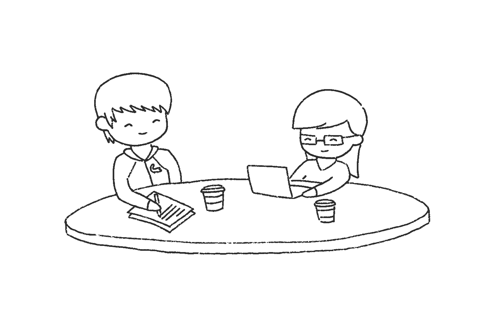

They ended up working together on some projects and getting to know each other better. They started studying together and eating together. You could say their first impressions of each other kind of died off and they started to become friends. Sam didn't have many friends that were guys, especially none like John. John had many friends that were girls, but none like Sam.
© March 14, 2020 - Gooby and Samster